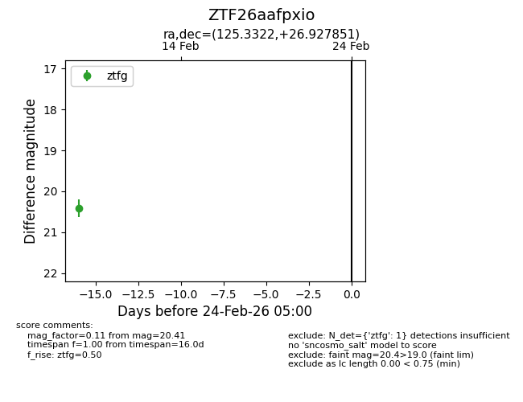
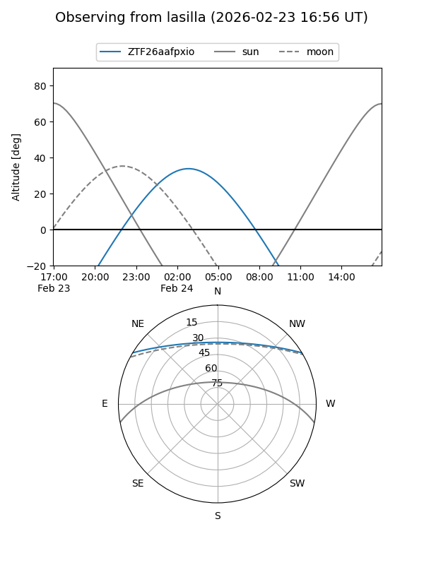
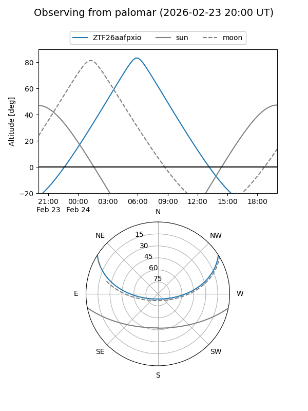

ZTF26aafpxio
Target ZTF26aafpxio at 2026-02-24 09:08
Aliases and brokers:
FINK: link
Lasair: link
ALeRCE: link
alt names
ZTF26aafpxio (ztf,fink_ztf)
Coordinates:
equatorial (ra, dec) = 125.3322,+26.92785
equatorial (HMS+DMS) = 08:21:19.74,+26:55:40.26
galactic (l, b) = (196.2017,+30.65109)
Flags:
Photometry:
last ztfg=20.41
1 ztfg detections
Lightcurve

Visibility


Additional plots